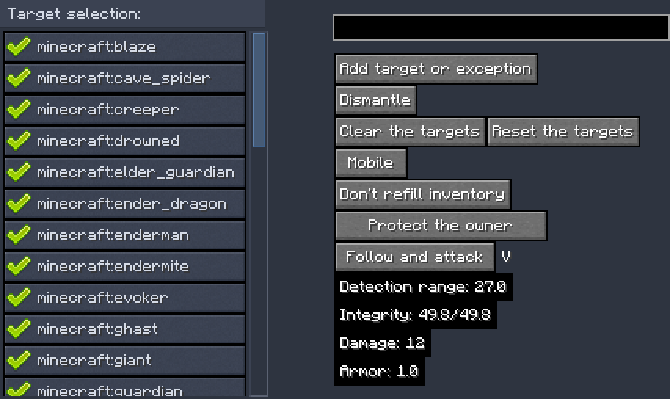

K-Turrets is a Minecraft mod which adds several turrets and combat drones. Turrets protect areas from hostile mobs. Drones work similarly to turrets, but are mobile and have lower stats. I will refer to drone or turret as 't/d' if the contextual information applies to both object types during the overview.
T/d can be obtained by crafting its respective item. First you must obtain titanium ingots, which are smelted from raw titanium in the blast furnace, which drops from titanium ore generating in the Overworld.
Turret recipes have following pattern - 6 titanium ingots, a dispenser, and type-specific ingredient on sides:
Drone recipes have following pattern - 4 titanium ingots, 2 feathers, a dispenser and type-specific ingredient on sides:
You can configure t/d via a UI which is accessed by Shift + right click on the t/d.
On the left side there is a list of applicable targets, represented by a toggle button with the entity's registry name. On the right side there are several controls, integrity (health) indicator and a couple of hints. To remove a target, press on it - it will appear crossed out. Once you removed desired targets, close the screen to apply the changes. To add a target, use the text field on top - write full registry name and then press 'Add...'button. While you write, a list of suggestions will be displayed below. You can click on a suggestion to copy it into the text field.
You can exclude players from targets using the same text field by typing in a player's name prefixed by '!'. Excluded players will appear at the top of the target list.
Pressing 'Dismantle' will drop the t/d in item form (its state and ammo will be saved). There is another button that toggles t/d's pushability, and another button which controls whether a t/d will attack players who are not allied to you. "Claim" button will make a t/d yours.
Another button will show up in drone UI which controls whether a drone is following its owner, staying or guarding.
Dismantling a t/d will produce an item that has t/d's data written on it; you can see t/d's UUID in the tooltip. Using such item will place that t/d and load its data.
If t/d is damaged, you can repair it with a titanium ingot by Shift + right clicking it. Drone recovers 1/4 of integrity from 1 ingot, and turret recovers 1/6 of integrity.
By default t/d's targets are all potentially hostile mobs. If you want it to shoot players that are not allied to you, you must toggle the mentioned control button.
To access t/d's inventory, right click it. There you can load it with appropriate ammo.
Hoppers can insert ammo into t/ds.
You can hold 'K' key to highlight locations of your drones in 128 block range around you (even through blocks):

Turret: if it has ammo (and weapon if it's an Arrow turret), it will shoot at its targets within range.
Turret can be put into a minecart.
Drone: same as turret, but will pursue the target. If is set to follow the owner, will fly towards his body. When attacking a mob, a drone will move sideways and move back if an attacking mob is too close.
Drones have less slots for ammo.
T/ds won't hurt friendly mobs unless they are in the target list.
Turrets will take ammo from adjacent inventories if 'refill inventory' toggle is enabled in the configuration screen.
There are following types of t/ds:
Each turret type's stats can be configured separately, such as health, range, armor, fire rate, damage. By default, their stats are identical except damage; turrets ranked by damage, from lowest: cobble, firecharge, arrow, bullet, brick, gauss. If you change the range, then the new value will be applied to only newly placed t/ds.
Turret default values:
Health = 60
Armor = 3
Range = 32
Fire rate = 20
Drones' stats are derived from appropriate turrets' stats like this:
Health = Turret Health * 85%
Range = Turret Range - 5
Armor = Turret Armor * 34%
Other stats are identical, though their inventory has 1 row of slots less.
If you need, you can change ammo items used.
You can turn on drone propeller sound in the client config.
You can define what mobs will be excluded from default targets in the config.
You can configure amount of titanium ore generated in 1.16.5-1.19.2 versions of the mod. Versions 1.20.1 and up require a datapack.
In the server config (which can be found in "world/serverconfig" directory) there are defined limits of drone and turret count per player. A player will not be able to place new drones or turrets if he reaches the limits. Default values are 10 for drones and 10 for turrets.
You can toggle ammo refill, which will make t/d to take ammo from adjacent inventories.
You can copy target filters from one t/d to the other using Filter Copier.
You can make t/d projectiles ignore mob damage cooldown using this datapack (for versions 1.20.1 and up).
Here are good sources of ammo: